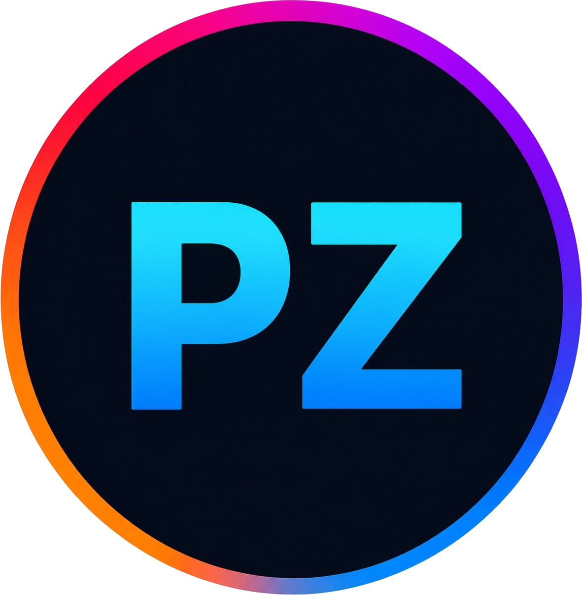

▣
Work Inside Your Existing Systems
We securely remote into your environment to handle AE tasks inside your tools, storage, and pipelines.
☁ Jump Desktop
HP RGS
Teradici
Parsec

PostOpz Post OperationsPostOpz provides on-demand assistant editor support for modern post teams — handling syncs, transcodes, turnovers, exports, and media operations so editors stay focused on the cut.
Workflow support for industry-standard post environments
Use your existing systems or leverage our managed cloud infrastructure. We adapt to your workflow—not the other way around.
We securely remote into your environment to handle AE tasks inside your tools, storage, and pipelines.
Leverage fully managed cloud editing environments powered by Avid Edit On Demand and our tech experts.
Submit requests through your existing workflow. We handle the operational execution behind the scenes.
Avid, Premiere, and Resolve project setup, bin organization, media structure, naming conventions, and editorial handoff prep.
DNxHR, ProRes, proxy generation, relink-safe workflows, upload coordination, and media verification.
Audio sync, multicam grouping, interview prep, stringouts, scene organization, and editor-ready timelines.
Mix and online turnovers, AAF/OMF prep, split tracks, reference exports, and vendor delivery coordination.
Review exports, Frame.io uploads, versioning, captions prep, delivery QC, and final output management.
Drive organization, cloud backups, checksum verification, archive prep, transfer tracking, and project wrap support.
We map your NLE, storage, naming conventions, delivery specs, and access requirements.
Send AE tasks through Slack, email, or your project management system.
We manage status updates, perform the work, and deliver editor-ready handoffs.
Your creative team receives organized projects, synced media, exports, and turnovers without operational drag.
Flexible support plans for teams that need consistent assistant editor coverage without expanding headcount.
For solo editors, creators, and small teams needing recurring AE support.
For production companies, agencies, and teams with ongoing post volume.
For shows, post departments, and remote-first teams needing infrastructure support.
Tell us about your workflow, infrastructure, and the operational tasks consuming editorial time.